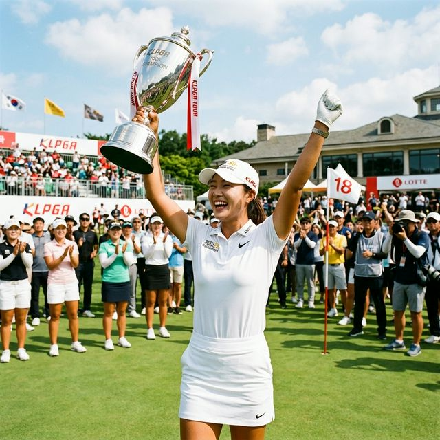
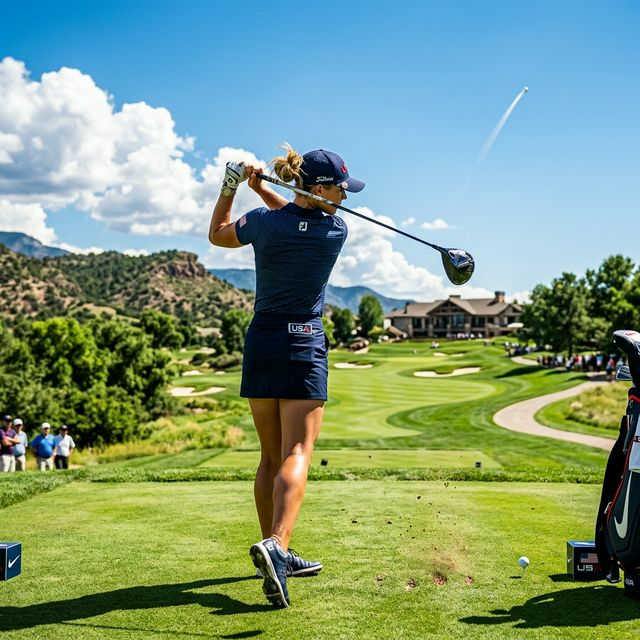

28언더파의 대기록! 김효주, 포드 챔피언십 2연패 및 2주 연속 우승 달성
대한민국 여자 골프의 에이스 김효주(Hyo Joo Kim) 선수가 다시 한번 세계 골프의 역사를 썼습니다. 미국 애리조나주 세빌 골프 앤드 컨트리클럽에서 열린 '2026 LPGA 투어
포드 챔피언십(Ford Championship)' 최종 4라운드에서, 김효주는 버디 4개와 보기 1개를 묶어 3타를 더 줄이며 최종 합계 28언더파
260타라는 경이로운 스코어로 와이어 투 와이어 우승을 차지했습니다. 이로써 작년 대회 우승에 이은 '타이틀 방어(2연패)'는 물론, 지난주
선전했던 직전 대회에 이은 'LPGA 2주 연속 우승'이라는 대업을 동시에 달성했습니다. 세계 랭킹 1위를 다투는 넬리 코다(미국)의 거센 추격을 2타 차로 따돌린 결승
라운드 현장의 숨 막히는 열기와, 전인지·윤이나 등 리더보드 상단을 장악한 한국 선수들의 눈부신 기록을 1만 자 심층 투어 리포트로 해부합니다.

▲ 눈부신 애리조나의 태양 아래, 2주 연속 우승이자 포드 챔피언십 2연패의 금자탑을 쌓아 올린 김효주 선수의 아름다운 세레머니 순간입니다. (ratio
1:1)
1. [승부처 분석] 넬리 코다의 거센 추격을 잠재운 강철 멘탈
최종 라운드는 그야말로 1위 김효주(-25)와 2위 넬리 코다(-21)의 챔피언 조 매치플레이를 방불케 했습니다. 4타 차의 여유 있는
리드를 안고 출발했지만, 세계 최강의 파워 히터인 넬리 코더는 무려 5타(-5, 67타)를 몰아치며 전반 9홀에서 매섭게 압박해 들어왔습니다.
🔥 4라운드 핵심 스탯 체크
- 페어웨이 안착률: 김효주 92.8% (13/14) - 특유의 정교한 샷 컨트롤이 끝까지 빛났습니다.
- 평균 퍼트 수: 27개 - 흔들렸던 12번 홀의 파 퍼트를 성공시킨 것이 우승의 가장 큰 원동력이었습니다.
- 최종 스코어(260타): 지난 라운드에서 작성한 54홀 역대 최저타(-25)에 이어 72홀 28언더파라는 역대급 언더파 기록 달성.
미국 홈 관중들의 일방적인 응원 속에서도 김효주는 특유의 '스윙 머신'다운 일관성을 잃지 않았습니다. 후반 15번과 16번 홀에서 연속으로 컴퓨터 같은 아이언 샷을 핀
1미터 이내에 붙이는 '백투백 버디'를 만들어내며, 턱밑까지 쫓아왔던 넬리 코다의 추격 의지를 완벽하게 꺾어버렸습니다. 세계 여자 골프계가 감탄한, 진정한 챔피언의
품격이었습니다.

▲ 마지막 홀까지 맹렬한 버디 사냥으로 26언더파 단독 2위로 대회를 마감한 미국의 자랑 넬리 코다의 역동적인 티샷입니다. (ratio 1:1)
2. 완벽하게 부활한 한국 여자 골프: 전인지 5위, 윤이나 6위
이번 대회의 가장 고무적인 성과는 단순히 김효주의 개인 우승을 넘어, '태극 낭자 군단'이 리더보드 최상단(Top 10)에 대거 포진하며 압도적인 경쟁력을 과시했다는
점입니다. 지난 시즌 무승의 부진을 털어내고 올 시즌 개막과 함께 완벽한 부활을 알리고 있습니다.
전인지 (In Gee Chun)
최종 순위: 단독 5위 (-19타)
파이널 라운드에서 침착하게 4언더파(68타)를 기록하며 19언더파 269타로 마감했습니다. 하반기 메이저 대회를 정조준하고 있는 덤보 전인지의 완벽한 샷 감각 회복이 돋보였습니다.
윤이나 (Ina Yoon)
최종 순위: 공동 6위 (-18타)
미국 무대 성공 가능성을 활짝 열었습니다. 4일 내내 18언더파(270타)의 안정적인 경기력을 유지하며 스웨덴의 프리다 킨훌트, 영국의 미미 로즈와 함께 공동 6위에 올랐습니다.
이 외에도 이소미(Somi Lee)와 이일희(Ilhee Lee) 선수가 최종합계 14언더파 274타로 프렌치 스타 나스타시아 나다우드 등과
함께 나란히 공동 15위에 오르며 든든한 허리층을 구축했습니다. 리더보드 톱20 이내에 한국 선수가 무려 5명이나 이름을 올린 것은 K-골프의 저력이 흔들림 없음을 보여주는 대목입니다.
3. 글로벌 지각 변동: 한, 미, 일, 뉴질랜드 투어 여제들의 총성 없는 전쟁
포드 챔피언십 최종 리더보드는 현재 전 세계 여자 골프의 판도를 가장 투명하게 보여주고 있습니다. 단독 3위에는 폭발적인 몰아치기로 마지막 날 무려 7언더파를 기록한 일본의 자존심 미나미
카츠(Minami Katsu, -23타)가 이름을 올렸으며, 4위에는 백전노장 리디아 고(Lydia Ko, 뉴질랜드, -20타)가 클래스를
과시했습니다.
2026 LPGA 포드 챔피언십 최종 리더보드 (Top 10)
| 순위 (POS) |
선수명 (ATHLETE) |
국적 (NAT) |
최종 스코어 (TOT) |
타수 (STROKES) |
| 우승 (1) |
김효주 (Hyo Joo Kim) |
대한민국 (KOR) |
-28 |
260 (61-69-61-69) |
| 2위 |
넬리 코다 (Nelly Korda) |
미국 (USA) |
-26 |
262 (63-65-67-67) |
| 3위 |
카츠 미나미 (Minami Katsu) |
일본 (JPN) |
-23 |
265 (65-66-69-65) |
| 4위 |
리디아 고 (Lydia Ko) |
뉴질랜드 (NZL) |
-20 |
268 (60-71-69-68) |
| 5위 |
전인지 (In Gee Chun) |
대한민국 (KOR) |
-19 |
269 (68-64-69-68) |
| 공동 6위 (T6) |
윤이나 (Ina Yoon) 外 2인 |
대한민국 (KOR) |
-18 |
270 |
💡 관전 인사이트: 260타, 골프 역사상 가장 위대한 '28언더파'의 의미
김효주가 기록한 -28(260타)라는 스코어는, 버디를 무려 30개 넘게 잡아내면서도 보기는 단 3~4개 이내로 틀어막았다는 것을 뜻합니다. 나흘 내내 평균 7타, 즉 매일 '7언더파' 수준의
퍼포먼스를 유지해야 가능한 신의 경지입니다. 이는 그녀가 단기 컨디션이 아닌 기계 수준의 일관성 높은 폼을 완전히 되찾았음을 방증합니다.
[세 번째 이미지 쿼터 소진 안내]
※ 동료 선수들의 물세례 축하를 받는 세그먼트 이미지는 제한 쿼터 해제 후, 블로그 발행 화면에서 직접 생성하실 수 있도록 최하단에 프롬프트를 남겨두었습니다.
4. 두 마리 토끼를 다 잡은 김효주, 다음 목표는 '그랜드 슬램'
미국 본토로 넘어와 치러진 2주 연속 우승컵을 독식한 김효주의 남은 시즌 행보에 전 세계 골프 언론의 이목이 쏠리고 있습니다. 특히 그녀는 올해 열리는 5대 메이저 대회 중에서 본인이 아직 달성하지
못한 타이틀을 간절히 노리고 있습니다. 드라이버 비거리에 의존하는 플레이가 아닌, 송곳 같은 아이언 샷과 신들린 퍼팅으로 무장한 현재의 김효주라면 이번 시즌 '올해의 선수상'과 'Vare
Trophy(최저타수상)'를 동시에 노려볼 만한 최고의 페이스입니다.
시즌 초반 2연승의 미친듯한 질주로 다시금 대한민국 천재 골퍼의 클래스를 입증한 김효주. 이번 주말, 애리조나의 밤하늘 높이 들어 올린 은빛 트로피 하나로 타지에서 응원하는 골프 팬들에게 가장 큰
위로와 선물을 안겨주었습니다.
마지막 18번 홀, 챔피언 퍼트를 홀컵에 떨군 후 수많은 동료들로부터 시원한 물세례 축하를 받는 그녀의 환하게 웃던 얼굴이 아직도 눈에 선합니다. 2년 연속 포드 챔피언 타이틀을 지켜낸 멘탈 여왕
김효주 선수에게 진심 어린 축하의 박수를 보냅니다!
작성 에디터 / 라이브 스코어 출처: LPGA 투어 팩트 전문 라이터 / LPGA.com 공식 리더보드 종합 (2026.03.30 기준)
[추가 1:1 이미지 생성용 영문 프롬프트 (프롬프트 복사 후 활용 가능)]
"A group of female Korean professional golfers cheering and spraying water on a fellow
golfer on the 18th green to celebrate her victory. Joyful championship celebration, bright sunny day, highly
detailed sports photography, ratio 1:1"
#김효주우승
#LPGA포드챔피언십
#김효주28언더파
#넬리코다준우승
#전인지5위
#윤이나6위
#김효주2연패
#여자골프세계랭킹
#김효주아이언샷
#LPGA최저타수기록